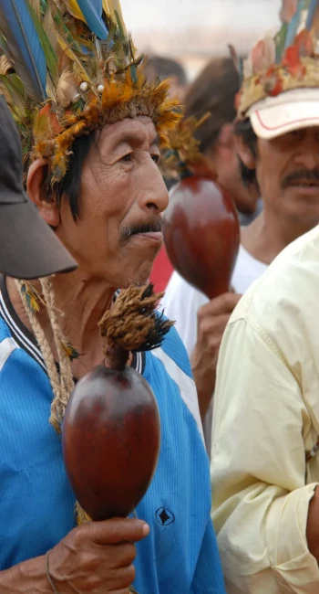
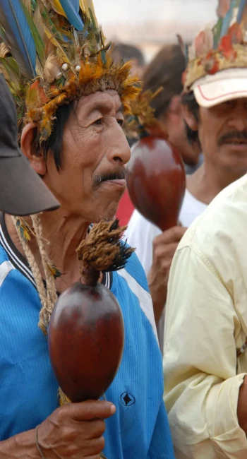

UM POUCO SOBRE KAKA WERÁ
Kaká Werá é escritor, educador, terapeuta, empreendedor social e conferencista. Precursor da literatura indígena no Brasil, autor de 12 livros, entre os quais os premiados: A Terra dos Mil Povos e Menino-Trovão. Fundou a 30 anos atrás o Instituto Arapoty que desenvolveu projetos no Brasil e na França com o foco na valorização dos saberes tradicionais dos povos originários. Realizou conferências em 14 países, entre eles: Estados Unidos, França, Inglaterra, África e Índia. Atualmente foca suas atividades em seminários e vivências para desenvolvimento de pessoas e de comunidades, é colunista da revista Vida Simples e roteirista.
Filho de pais tapuias, que migraram nos anos 1960 do norte de Minas Gerais (região próxima a Montes Claros) para São Paulo, na capital, indo morar próximos à última aldeia guarani na região sul da cidade, onde nasceu, em 1964.
Foi nomeado Werá Jecupé, pelo pajé e cacique Alcebíades Werá no período em que morou entre os guarani nos anos de 1980 em um rito de batismo chamado "Nhemongarai" na aldeia Tenondé Porã, antigamente também chamada de Morro da Saudade.
Em meados da década de 1980 fez uma peregrinação por várias aldeias guaranis do sudeste e sul do Brasil indo até o Paraguai, buscando o entendimento mais profundo da cultura guarani, refazendo um percurso que historicamente ficou conhecido como “Busca da Terra Sem Males” ocorridos entre os séculos XVI e XVII em que os guaranis espalharam-se pelo litoral do sul e sudeste, fragmentando sua sabedoria ancestral ao longo desta rota. Dessa peregrinação resultaram depois os livros Tupã Tenondé, O Trovão e o Vento e A Águia e o Colibri, editados pelas editoras: Peirópolis, Polar e pelo Instituto Arapoty; obras de cunho antropológico e filosófico.
De 1989 a 1992 apoiou os guaranis na Aldeia Morro da Saudade a construírem o primeiro centro de resgate e preservação da cultura tradicional , o Centro de Cultura Ambá Arandu.
Em 1994 fundou o Instituto Arapoty, destinado a difundir os valores e a filosofia dos povos indígenas do Brasil e promover ações de sustentabilidade e empreendedorismo social, através de valorização da arte, do artesanato e da criação de um movimento de empoderamento pela literatura indígena, tornando cidadãos indígenas protagonistas de sua própria fala.
RECONHECIMENTO NACIONAL E INTERNACIONAL
Sua atuação na área do empreendedorismo social e direitos humanos conferiu-lhe diversos prêmios ao longo do tempo: da Ashoka Empreendedores Sociais em 2003,
Prêmio Transformadores da revista Trip em 2010. Foi um dos conselheiros pioneiros da Bolsa de Valores Sociais, da BOVESPA, atuando na indicação de projetos de preservação ecológica e sustentabilidade.
Seu conhecimento da cultura ancestral do Brasil o levou a proferir palestras na Universidade de Oxford (1997) , Universidade de Stanford (2002), Universidade de Nova York (NYU) em (2003), na UNESCO. Desde 2001 tem dado seminários na França, no México, na Escócia, na Índia e na África do Sul.
Foi nesse período que Kaká Werá valeu-se da literatura como instrumento de (re)existência e difusão de saberes e valores dos povos indígenas sendo um dos precursores e incentivadores da produção literária pelos próprios representantes dessas culturas ancestrais, tendo publicado ainda dois livros no exterior “ La voix du Tonner” em francês através da Fundacion Danielle Mittterand e em alemão através da Sociedade Antroposófica,
Na França foi um dos fundadores do Institut Arapoty France, responsável por organizar seminários, publicações, cursos com foco em ecologia, diversidade cultural e filosofias dos povos ancestrais do Brasil.
Leciona a mais de 25 anos na Universidade Holística da Paz (UNIPAZ), cujo reitor é o antropólogo e psicólogo Roberto Crema, que o tornou responsável pela cátedra indígena da Universidade.
 
